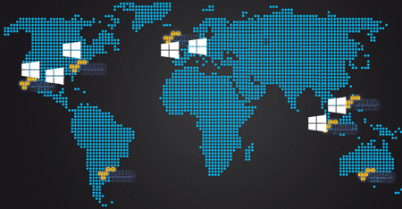

How It Works
All our effort is to provide a comfortable and enjoyable Aplocalypse viewing for as long as possible.
Different channels of distribution
-
Internet
At first, we email you when the Big Date is begin. After that we will open video streaming translations based on Erlyvideo server. Also, help us with #endofworldonline at twitter! -
SMS
Only for paid accounts, a lastest hot The Apocalypse news will be delivered through SMS. Free users still can use ifttt.com triggers as well. -
Radio communications
We have a three transmitters in diffirent countries and waiting to get another one soon. A Shortwave broadcastring (3500 — 3650 kHz) is simple and proven technology.
Also, we plan to release "The Apocalypse 3D" Special Blu-Ray™ Collection Edition in Ultra High Definition at Mid 2013. Of course, if the world stay here.
Datacenters Around The World
EndOfWorldOnline.com runs at the most used cloud providers Amazon AWS and Windows Azure. Servers worked at GNU Linux and application distributed accross multiple instances. If all of cloud datacenters will be broken, it would mean the entire Internet destroyed.
Paid Accounts
Why we make paid account if the whole world could die? It's because we need to prepare our equipment, hardware, software and we hiring many people who don't believe in The End, but euros.
It's cost a lot of money.
Our Mission — Save The Humanity
Know your enemies.
Be ready, evaluate your chances when world's most important disaster begins.
If you realize that you cannot survive — get fun!
Good luck to us all.